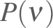
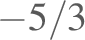
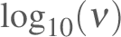

Next: Methods used to estimate Up: Background regarding spectral variance Previous: Terminology
Consider the cumulative distribution function for variance , the fraction of the variance that is contributed by frequencies smaller than . The differential distribution function with respect to frequency is then
In the following, two options for variance spectra are emphasized:  vs on a linear plot and vs with a logarithmic abscissa and either a linear or logarithmic ordinate scale. These are regarded here as “proper” displays because the area under segments of the plotted curves represent contributions to the variance so it is possible to estimate the contributions to variance from various intervals in frequency by using the areas on the plot. This direct representation is compromised in the case where the variable is plotted on a logarithmic scale because then it is necessary to consider the logarithmic ordinate when evaluating areas. This minor inconvenience nevertheless is less significant than the problems that arise from using a linear ordinate scale, in which case the ordinate range obscures relationships and the common “ ” slope seen in logarithmic plots becomes a parabolic line that is difficult to interpret. For that reason, plots of spectral variance here will emphasis plots of vs  on log-log scales. It is suggested that plots of vs on log-log scales should be avoided because the connection between area on the plot and variance is lost, making the plot harder to interpret. In addition, “ ” spectra are steep, the range of ordinate values is higher, and the plots are therefore more difficult to interpret than those plotting vs on a log-log scale.